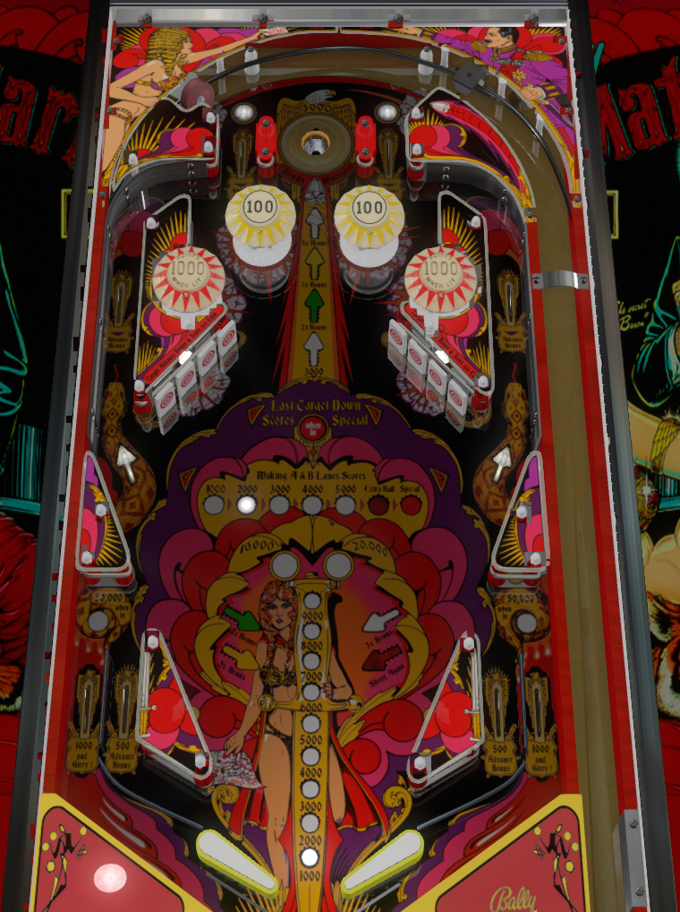

This game had both solid state and electromechanical versions. This guide was written with the solid state version in mind. Note that the EM version may have slightly different scoring or rules.
First priority should always be hitting the top center saucer 4 times to pick up a minimum of 12 bonus advance and a 5X bonus multiplier. After 5X bonus, go either for completions of A-B or completions of drop targets.
The top scoop always gives 3,000 points and 3 bonus advance. The second, third, and fourth scoop hits advance the bonus multiplier to 2X, 3X, and 5X respectively. (Sometimes depending on settings, bonus X is given at the 1st, 2nd, and 3rd hits instead.)
This should always be shot for first, as the end of ball bonus (which maxes out at 5X 29,000) is a very significant portion of scoring.
Saucer hits after 5X is lit do not give anything beyond 3,000 points and 3 bonus advance if the bonus count is not maxed.
Lighting 2X bonus also lights one of the outlanes for 50,000 points. Lighting the 3X bonus will light both outlanes for 50,000 points.
The scoop can be a very finicky shot. A direct flip up the middle is usually too strong and will hop out of the scoop before counting. Determine how much you can nudge the ball while it's at the top of the table to encourage it to fall into the saucer.
The A lane can be scored in the top lane to the left of the scoop or the left side of the big looping lane. The B lane can be scored in the same places but on the right side. A and B letters on their own score 500 points and a bonus advance. When a letter is lit, it is NOT yet collected, so shoot for letters that are lit to un-light them.
On some Mata Haris with particularly strong flippers or particularly low playfield angles, it's possible for the ball to loop all the way around and collect an A and a B in one shot.
Completing A and B scores and advances the lit value on the table- first 1,000, then 2,000, 3,000, 4,000, 5,000, extra ball, and special. (If extra ball and special are set to points they are worth 25,000 and 50,000 respectively.) A-B completions after the 7th award 5,000 points each.
Each drop target scores 500 points and one bonus advance.
Completing both sets of drop targets scores 50,000 points and lights the red bumpers for 1,000 points apiece. The second completion of the drop targets also scores a special.
Be ready for a forehand shot to the drop targets to bounce into the opposite bank and then return dangerously down the middle. Don't make a large slap save move to try to save such a return lest you risk tilting away the 145,000 points in bonus that you should ideally have before going for the drops at all.
Note that this table is completely symmetrical. Flipper passes are rarely if ever necessary. If you absolutely need the A or B that's on the same side as your current trap, either shoot the loop and hope the ball goes all the way around or shoot up the center and nudge the ball around.
Be sure you know how the top saucer kicks out. Frequently, a good option is to let the ball dead bounce off the first flipper it hits for a trap on the other one. Get acquainted with your machine and know how to respond to a kickout that looks like it comes very close to being a rude center drain.

All copyrighted names and terms in this document belong to their respective owners. The information provided in this document is for educational purposes only and no infringement is intended.
Back to top To game list To main page